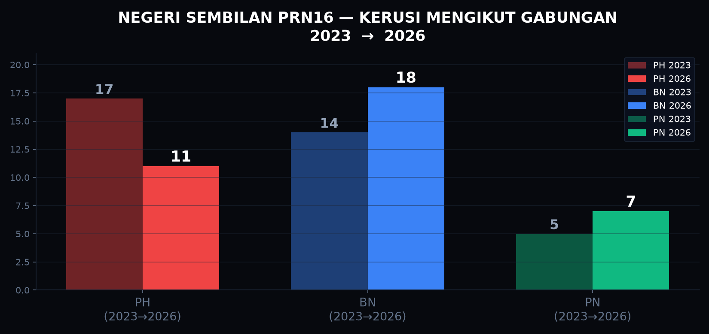
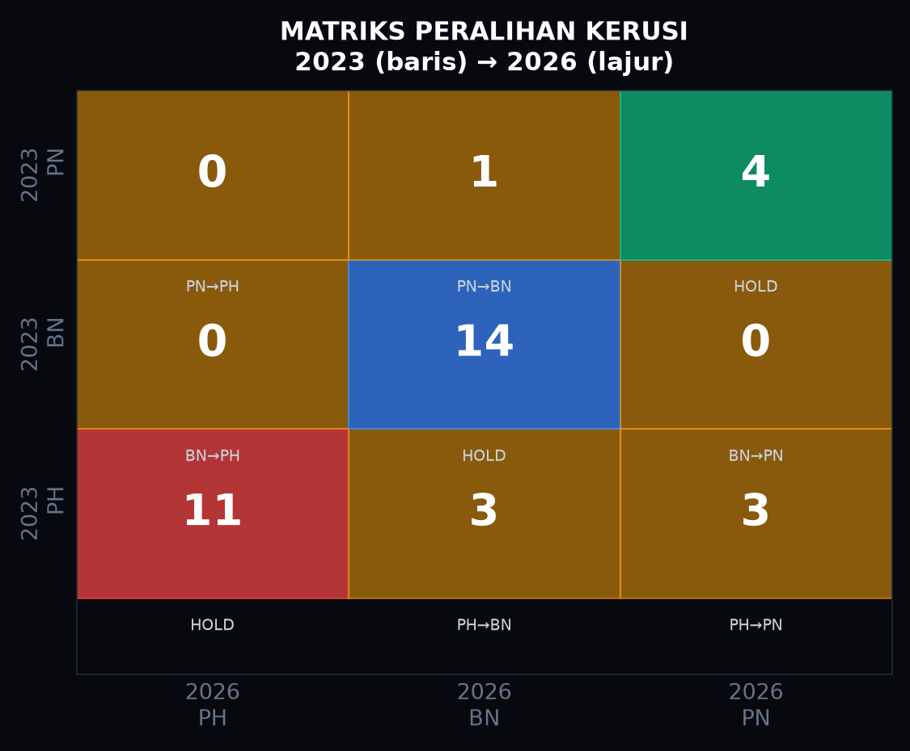
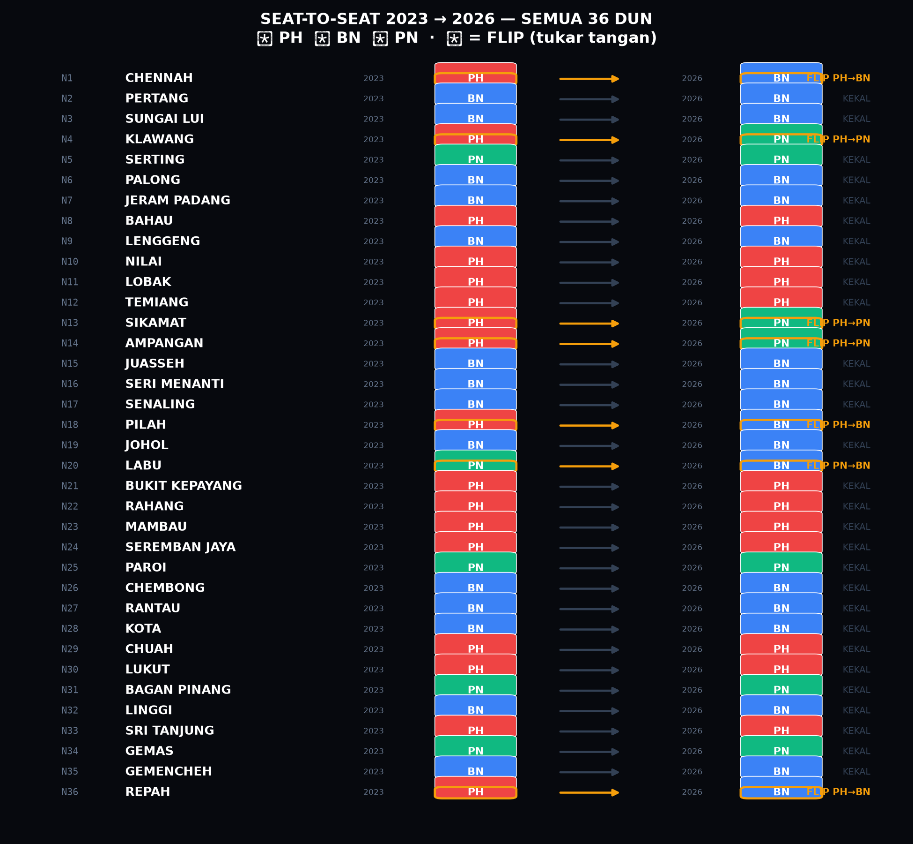

36 DUN, satu-satu perbandingan. Siapa pegang, siapa jatuh, siapa flip. Data 2023 = keputusan rasmi SPR; data 2026 = keputusan tidak rasmi malam pengundian. 7 flip.
Unjuran awal: Hung Assembly (18 PH - 16 BN - 2 PN - 2 Tossup). PH diunjur kekal pluraliti terasing jika keluar pengundi bukan-Melayu >68%.
Keputusan 1 Ogos: BN Majoriti Mudah (18 BN - 11 PH - 7 PN). BN sapu kerusi FELDA & flip 4 kerusi campuran akibat kejatuhan turnout bukan-Melayu ~12%.



| DUN | Nama | 2023 | 2026 | Majoriti 2023 | Status |
|---|